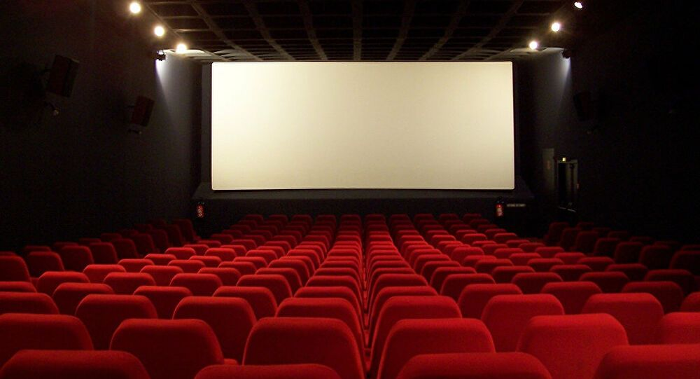

Presentación
Este es un blog de cinematogáfico en el que se discutirán películas de estreno y otras que vaya viendo a lo largo del tiempo.
Sobre mí
Soy estudiante, bastante cinéfilo y me gusta ver películas, series reportajes y documentales en mi tiempo de ocio.
Debido a mis problemas respiratorios, en estos tiempos de pandemia no he salido mucho de casa, exceptuando para actividades esenciales como ir a clase. Esto ha provocado que en gran parte de mi tiempo de ocio realice actividades dentro de casa como la lectura y cinematografía.
Espero que les guste mi blog y encuentren algo interesante o útil en él.
Un saludo.